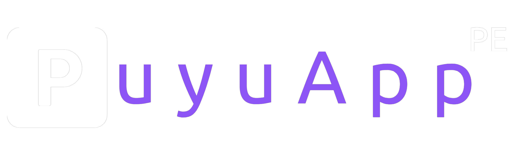

<mat-toolbar color="primary" class="tool">
  <button mat-icon-button class="example-icon" aria-label="Example icon-button with menu icon" matRipple
    [matRippleAnimation]="RippleAnimationConfing" [matRippleCentered]="false" [matRippleDisabled]="false"
    [matRippleUnbounded]="false" [matRippleColor]="'rgba(68, 0, 255,.5)'" (click)="toogle()">
    <mat-icon *ngIf="estadoSide" data-aos="zoom-out" data-aos-duration="1000">close</mat-icon>
    <mat-icon *ngIf="!estadoSide" style="color:#fff" data-aos="zoom-in" data-aos-duration="1000">menu</mat-icon>
  </button>
  <span data-aos="fade-right"></span>
  <span class="example-spacer"></span>
  <button mat-icon-button class="example-icon favorite-icon" aria-label="Example icon-button with heart icon">
    <i class="fa-solid fa-user" style="color: #ffffff;"></i>
  </button>
  <button mat-icon-button class="example-icon" aria-label="Example icon-button with share icon" (click)="logOut()">
    <i class="fa-solid fa-power-off fa-beat-fade"
      style="--fa-animation-duration: 3s;--fa-animation-iteration-count: 5;--fa-animation-timing: ease-in-out;"></i>
  </button>
</mat-toolbar>